2ND SOLO EXHIBITION · 2026
ON & OFF
켜지고, 멈추고, 다시 움직이는 것들
2026.09.11 — 09.17 · 오픈아츠 스페이스 MERGE · 부산

제2회 정병규 개인전
마블머신, 미니어처, 오브제 드로잉을 통해 움직임과 정지, 그리고 다시 움직이기 전의 상태를 보여준 전시입니다.
EXHIBITION WORKS
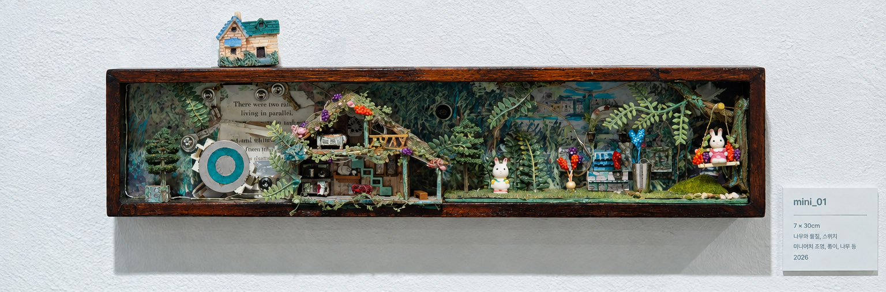
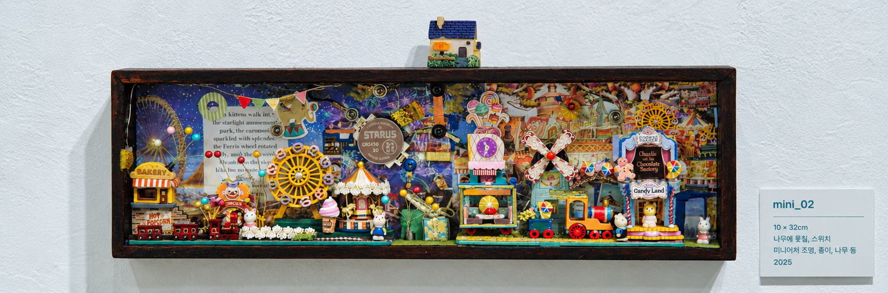
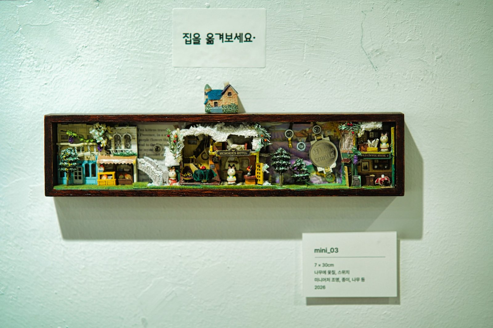
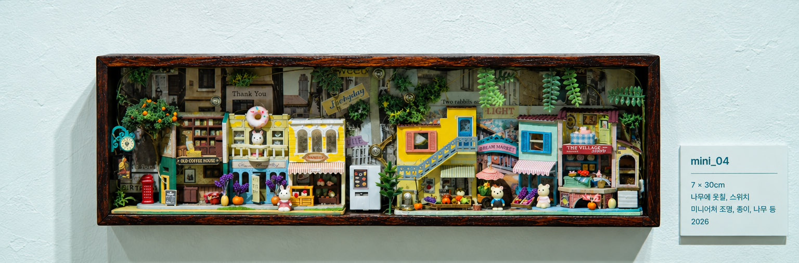
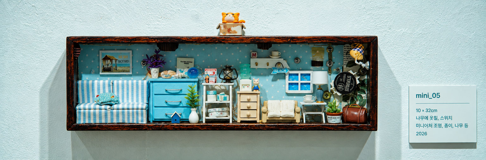
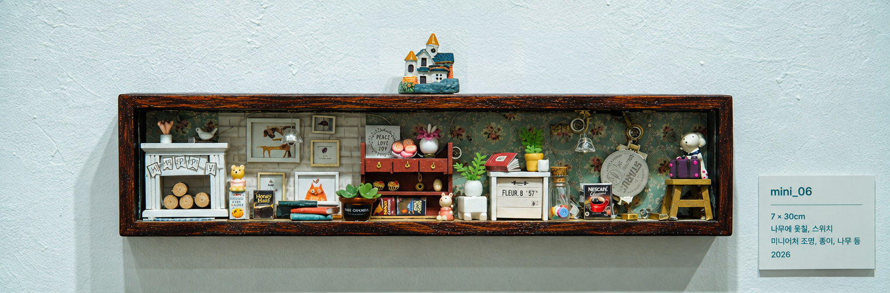

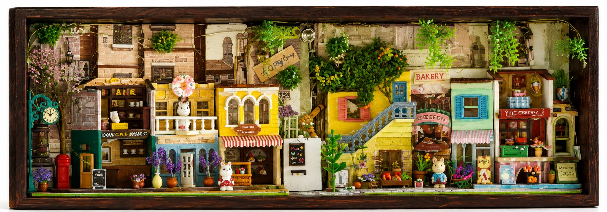
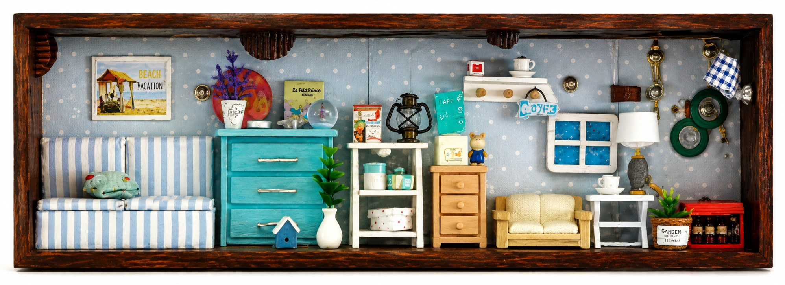
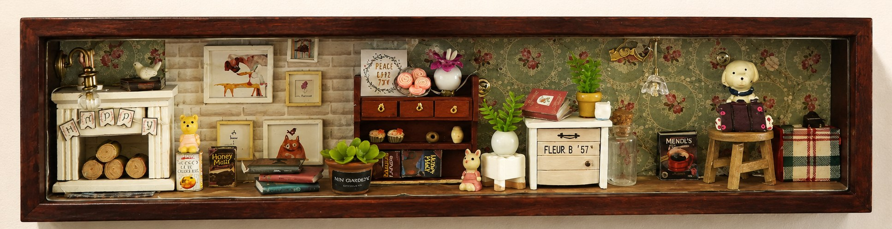
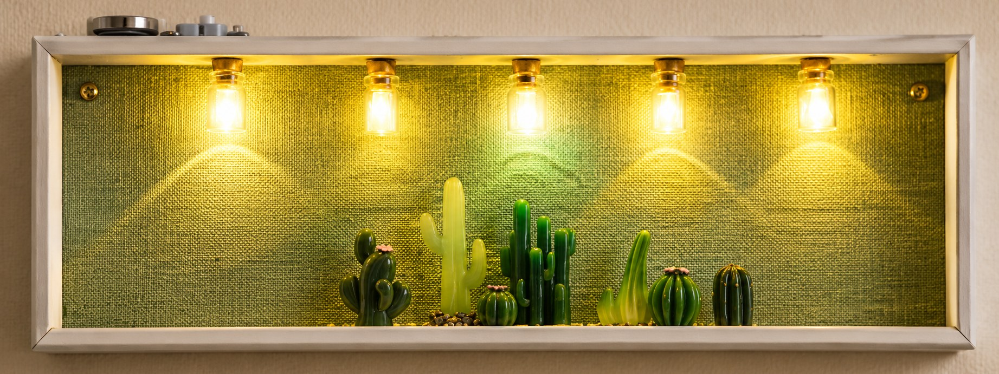
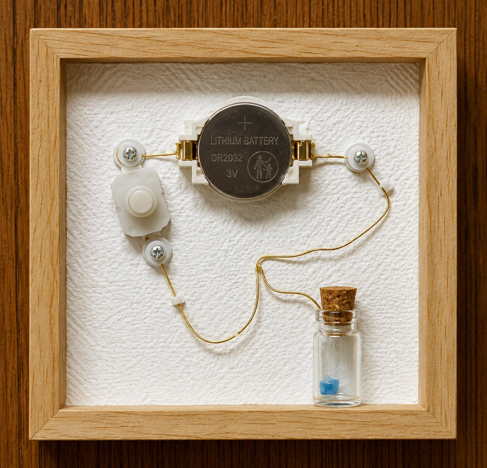

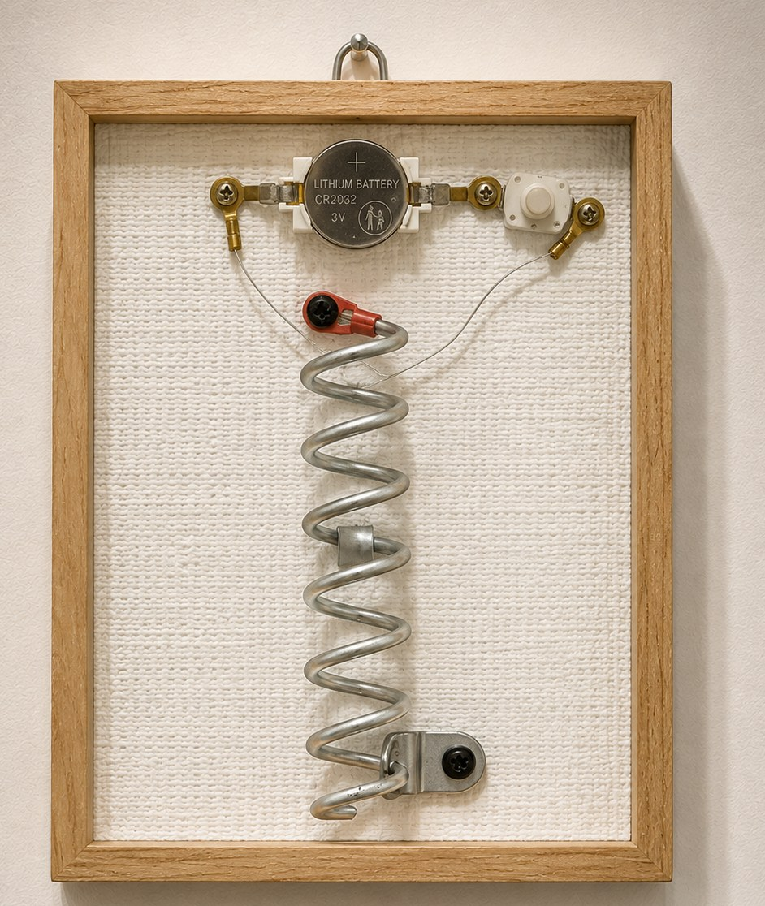
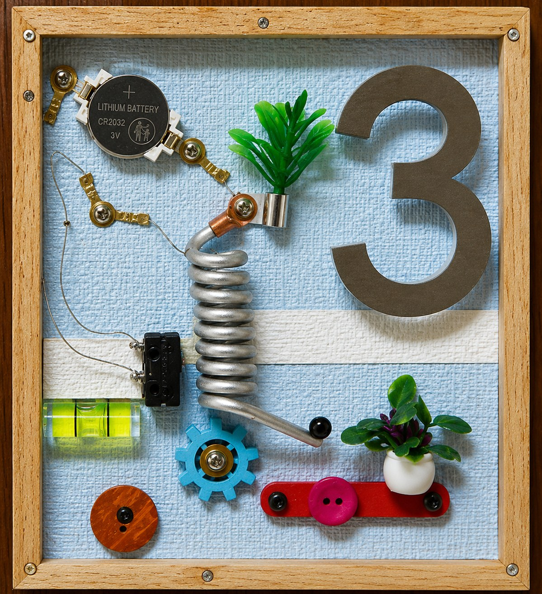
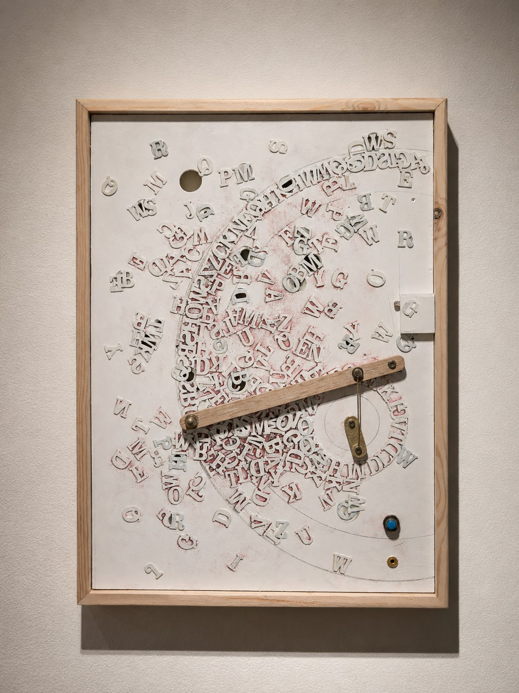


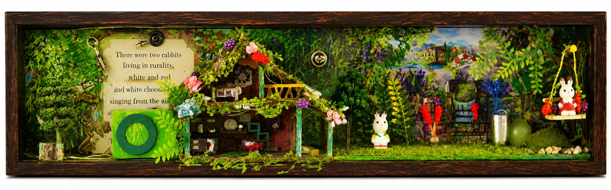

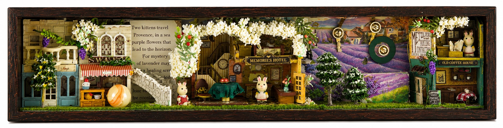
VIDEO
← EXHIBITIONS